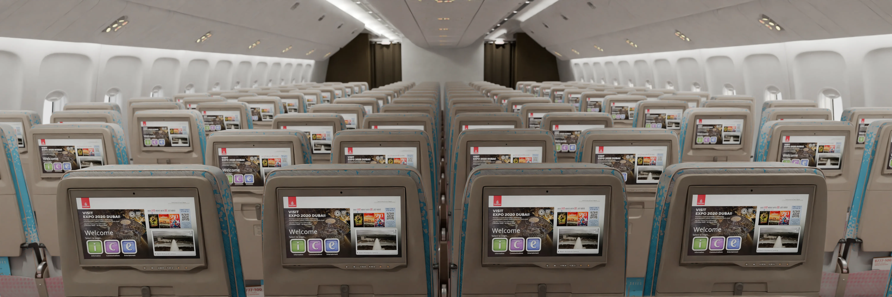
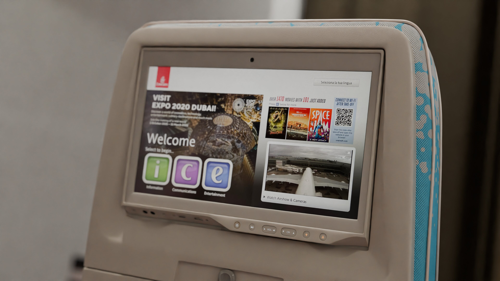
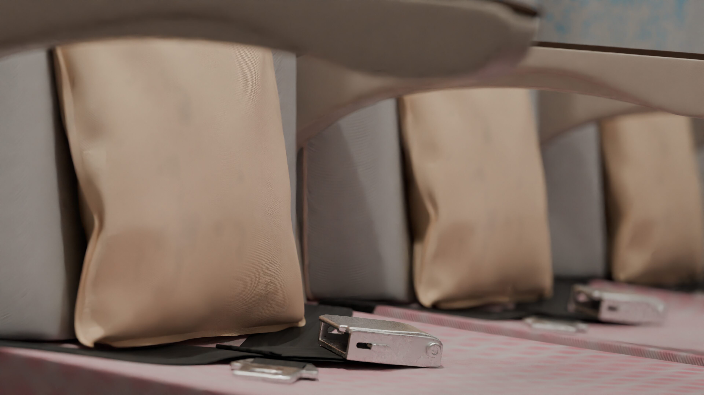

Abstract
Renowned for its rapid pace of innovation, the airline industry is continuously embracing new technologies to enhance efficiency and maximise revenue streams. This paper aims to explore the impact of product visualisation directly within an airline booking web application.
Incorporating numerous points of reference such as industrial insights as well as a combination of primary and secondary surveys, this academic study was able to demonstrate that through the implementation of product visualisation within the booking process, potential customers are somewhat more likely to engage with upselling and cross selling in its current format, whilst significantly increasing overall customer satisfaction and retention levels.
Acknowledgements
I would like to take this opportunity to acknowledge those that have helped me undertake this project.
First of all, I would like to thank my supervisor Andy Fitzpatrick for the valuable processes and techniques that I have learned from him over the academic year. Modular environment workflows were critical in the timely delivery of this project.
Subject tutors Anna Gardener and Jack Wood were also of immense support over the duration of this project and academic paper, having taken the time to go over details on numerous occasions and providing a solid understanding of the project over the course of the year.
Finally, I would like to extend my gratitude to my friends and family. Not only for their continuous input into my project, but also for their constant support over the past several years of my academics.
Table of Contents
Table of Figures
- Figure 1: An example of Digital Venue 3D's technologies implemented into the ticket booking system for liverpoolfc.com
- Figure 2: A chart representing user responses to the Pre-Production Questionnaire.
- Figure 3: A chart representing user responses to the Pre-Production Questionnaire.
- Figure 4: A chart representing user responses to the Pre-Production Questionnaire.
- Figure 5: A promotional overview of the mid-economy section.
- Figure 6: A promotional shot of an economy In-Flight Entertainment display.
- Figure 7: The material node setup of the emergency exit decal.
- Figure 8: The material node setup of the cabin wall asset.
- Figure 9: A production screenshot and promotional render of a decal found on the overhead of the interior cabin divider walls.
- Figure 10: A production screenshot and promotional render of a decal found on a tray table.
- Figure 11: A chart representing user responses to the Production Questionnaire.
- Figure 12: The landing page of the project web application.
- Figure 13: The booking page of the project web application.
- Figure 14: A chart representing user responses to the Post-Production Questionnaire.
- Figure 15: A chart representing user responses to the Post-Production Questionnaire.
- Figure 16: A chart representing user responses to the Post-Production Questionnaire.
- Figure 17: A promotional close-up render of a row of seatbelts.
Introduction
An exceptionally dynamic environment, the airline industry is one that is constantly seeking to embrace emerging technologies so as to enhance operational efficiency and customer satisfaction. Despite the numerous advances in online airline booking systems over several decades, these advancements within conventional booking systems often fall short with regard to providing an accurate and informative user experience, particularly in the area of seat selection.
The ability to visualise seating arrangements accurately is postulated to be of great convenience for customers, as it directly impacts their comfort and overall travel experience. Despite this, traditional airline booking systems are limited to two-dimensional seating maps which provide limited information to the customer, often leading to dissatisfaction when actual seating conditions do not meet expectations such as windowless outboard seats and emergency exit rows with limited visibility externally (Walton, 2020).
This academic paper will detail the processes undertaken to craft a solution to this concern, utilising a collection of comprehensive literature and industry standard practices and demonstrate the potential in product visualisation within an airline booking system for improved rates of customer satisfaction and customer retention as well as increased revenue through upselling and cross-selling.
Contextual Review
The airline industry is incredibly fast paced, with new technologies constantly driving forward innovation and efficiency. Within my academic paper, I aim to conduct research relating to online airline booking systems and the implementation of product visualisation within a web application. It is my opinion that conventional airline booking systems inadequately represent accurate seating conditions, thereby diminishing overall customer satisfaction throughout the booking process. The integration of a 3D graphical representation within the booking webpage is postulated to significantly enhance customer satisfaction throughout the seat reservation process, as well as boosting customer satisfaction, an increased rate of upselling, cross-selling and customer retention.
So as to substantiate this belief, I will conduct an in-depth analysis into the realm of product visualisation and its potential within the airline industry. This includes an investigation into current airline ticket systems and the resulting level of customer satisfaction, psychology and overall user experience as well as interviews and questionaries with experienced and inexperienced travellers alike. This will then be followed by an exploration of product visualisation with regard to technical implementation and the projected impact on customer purchasing patterns. Each area of research will be tested against qualitative and quantitative testing.
I wish to pursue this field of research due to my interests and experiences in 3D modelling, web development and the field of aviation. I hope to further explore a real-world industry issue and I believe that I can do so with this project whilst utilising a fulfilling mixture of my own abilities.
Preliminary Research
In order to produce a better understanding of the necessary structure and requirements for the academic paper, preliminary research was fundamental to be carried out. My initial findings have established that similar technologies within other industries have proven to play a critical role in attracting and retaining customers. One such example is that of 3D Digital Venue, a Barcelona-based studio that develops digital twins of real-world stadiums and arenas as well as venue maps, seating charts, ticketing integrations and web solutions (3D Digital Venue, 2023). The accumulation of such technologies has been proven to increase customer satisfaction, encouraging season ticket holder renewal rates and prospective hospitality buyers (Ticketing Business News, 2021).
My aim is to explore how the accumulation of these technologies can be successfully applied to the airline industry. Exploration of the current state of the airline industry’s ticketing system is required in order to establish the existing strengths and shortcomings of current systems and assess the best method of implementation. I will also explore user experience as well as customer satisfaction and how product visualisation may address concerns and shortcomings.
So as to maintain the expected level of work, a number of exclusions must be made to the scope of research. There are a wide range of specialised workflows necessary to execute this project such as modular environment generation, market analytics and web application development. As such, the first consideration would be the extent of technical complexity required to deliver an acceptable standard of product and research accordingly.
Airlines across the globe utilise a highly versatile range of aircraft, each with their own unique configurations and interior designs (Karki, n.d.). A tool such as an airline visualisation experience would require uniquely crafted environments which can drastically extend development time. With this constraint in mind, I believe it best to limit preliminary research and development to a singular airframe and airline.
Research Strategy
Primary Research
So as to retrieve unique research on the subject matter, multiple sources of questioning will be carried out. Surveys will seek to quantitatively measure user satisfaction and preferences throughout a typical airline booking system and the perceived impact of 3D visualisation within this process. Some examples of the questions that will potentially be found on this survey include:
- “How satisfied are you with current airline booking interfaces?”
- “How assured do you feel spending money for a specific seat on an aircraft?”
- “Would you feel more enticed to purchase upgrades if you were able to better visualise them?”
I would also pursue interviews with frequent and infrequent travellers in a search for further elaboration on a number of topics including the ones outlined within the survey.
Secondary Research
To collect a broader range of information, opinions and case studies I will explore a variety of secondary sources across the Internet. An example of a case study that I would like to look into would be 3D Digital Venue, which, as previously mentioned, is a company based in Barcelona that generates a wide range of digital recreations of stadiums, arenas and venues for the purpose of integration into a ticketing system (3D Digital Venue, 2023).
 Figure 1: An example of Digital Venue 3D's technologies implemented into the ticket booking system for liverpoolfc.com
Figure 1: An example of Digital Venue 3D's technologies implemented into the ticket booking system for liverpoolfc.com
In the second semester, the focus of my research will shift more toward quantitative data such as pre-existing interviews and questionaries with frequent and infrequent travellers that are accessible online.
Due to the extended nature of this body of work, it is highly likely that certain factors may alter the approach toward research methods. As such, it is important to be adaptable and open with regard to research topics as the wrong approach could potentially impede progress of the academic paper.
Anticipated Outcomes
As outlined within my hypothesis, I believe that the implementation of digital visualisation will result in an increased level of customer satisfaction and entice upgrades. This will be measured through a series of surveys and interviews with the appropriate participants.
Given the technical nature of the project, it is highly likely that an assortment of issues will arise. It is vital to the timely nature of the project to mitigate such issues through careful planning and adequate redundancies. The implementation of digital environments within a web page requires an amalgamation of workflows and skillsets that may not currently be up to standard, thus it will be necessary to progress my abilities in this regard.
Ethical Considerations
There are a number of ethical considerations to be made throughout this academic paper. These considerations will ensure that all associated individuals, including participants and interviewees are treated with due care and privacy. The project will first undergo an approval process with a board which will review the projected research topics and determine the suitability of them.
As a part of the process of data gathering, interviewees and project participants will share both anonymous and personalised information. As such, data security will be a significant consideration throughout the entire project. Such information must be kept secure and only used for the purposes that participants agreed to beforehand.
Participants must also be made to feel secure and confident throughout the research process. By following the above ethical considerations, it is my hope to ensure compliance with ethical standards.
Timeline
Below is a loose timeline depicting the project throughout the course. This is subject to changes given circumstances, deadlines and any unexpected developments.
Month 1: Preliminary Research
This stage of the project will involve preliminary research, defining further research objectives and project scope. Much of this has been outlined within this document.
Months 2-3: In-Depth Research
Throughout these months, I will be building upon my preliminary research and developing an in-depth understanding into the subject matter through both qualitative and quantitative research methods. This step is critical in ensuring the development of a final project that accurately tackles the outlined requirements. This not only involves exploration into product visualisation subject matter, but also the technical workflows required for the next stage of the project.
Months 4-5: Prototype Development
Utilising the qualitative and quantitative research conducted earlier within this project, I will commence the development of a project prototype that accurately reflects findings from throughout the research stage of this project.
Month 6: Testing, Feedback and Refinement
Upon the conclusion of prototyping, the project will progress onto user testing and feedback. This will test for a wide variety of factors such as user experience, functionality and how the proposed solution tackles the issues outlined within existing systems. Adjustments to the final product will be carried out continuously throughout this process.
Contextual Review Conclusion
In conclusion, my preliminary research has demonstrated that online product visualisation has driven forward ticket sales, increased customer satisfaction, encouraged season ticket holder renewal rates and prospective hospitality buyers (Ticketing Business News, 2021). The outline of this project is to explore the implementation of similar technologies within the airline industry. This will be done through qualitative and quantitative research and a final project that will corroborate multiple existing technologies in order to implement an immersive product visualisation service directly within an airline booking system. The project prototype will then be challenged against a series of testing such as user experience, functionality and the extent of resolved issues.
Main Body
Having established a foundational review of existing literature relevant to the subject of product visualisation and booking portals, the following section provides an in-depth overview into the core practical investigation and execution of the major project which hopes to further explore the prior research questions and objectives, being what impact product visualisation within an airline booking system could have on upselling, cross-selling as well as customer satisfaction and retention levels.
This project was structured in three key stages, those being design and development, implementation and user testing. Each phase of development was employed to ensure a release candidate that fulfilled user requirements and expectations with regard to functionality, usability and practicality.
Initial design and development planning began with the identification of the key requirements for the project at large. Researching existing product visualisation solutions on the market proved to be highly informative with regard to accumulating a set criterion for its practical execution. 3D Digital Venue provided a solid basis for the standards expected from consumers which claims to craft ‘exact replicas’ of sporting venues (3D Digital Venue, 2023). Successfully adapting this approach to stadia visualisation and event ticketing to the airline industry will be critical in the successful execution of this project’s goals.
So as to begin building a general overview of public attitude as well as to gather relevant information related to the development of the project, I first conducted a pre-development questionnaire to gather quantitative data which covered a number of topics pertaining to user opinions of typical airline booking systems. In doing so, I was able to discern a number of critical points of view with regard to the fundamental requirements and expectations of the end user.
 Figure 2: A chart representing user responses to the Pre-Production Questionnaire.
Figure 2: A chart representing user responses to the Pre-Production Questionnaire.
The above graph demonstrates that the majority of respondents found reasonable importance for clear and accurate representation of seating arrangements before making their flight reservation. As such, end users may find a prominent product visualisation portal more convenient and accessible than concealing it behind a supplementary menu system. A split screen interface featuring a traditional seating chart on the right-hand side, with an accompanying visualisation portal on the left-hand side would be the best resolution to this concern.
 Figure 3: A chart representing user responses to the Pre-Production Questionnaire.
Figure 3: A chart representing user responses to the Pre-Production Questionnaire.
With 53.8% of respondents answering “yes” and 30.8% of respondents saying “maybe”, this chart signifies that the integration of product visualisation would very likely enhance levels of customer satisfaction throughout the booking process for the majority of respondents, from a theoretical point of view. The challenge in this methodology is uncovering a suitable approach that does not take away from the user experience, but rather supplementing the functionality that already exists and building upon it.
 Figure 4: A chart representing user responses to the Pre-Production Questionnaire.
Figure 4: A chart representing user responses to the Pre-Production Questionnaire.
With the previous points in mind, the above graph contradicts the project’s hypothesis of product visualisation increasing levels of upselling and cross-selling given that a significant 38.5% of respondents claimed that they were unlikely to engage with upselling and cross-selling presented during the booking process. As such, I elected to conduct further investigation into the subject.
Hosting the product visualisation, the seamless execution of the web application was critical in drawing conclusions based on the project hypothesis. There were a number of core web development principles that were necessary to correctly execute such as responsive design for seamless usage across a wide variety of devices such as desktop computers, laptops, phones and tablets. This was to be executed through a Cascading Style Sheet technique called Responsive Design, in which web content may dynamically change the layout and structure to best suit the viewport in use (W3Schools, 2024).
Deliberating the implementation of the product visualisation within the web application, there were a number of considerations to be made with regard to performance, loading times and visual fidelity. Given the representative and broad nature of the project, it was necessary to produce an environment that came across as realistic as possible whilst remaining highly performant across a wide variety of devices. As such, a pre-rendered photosphere made the most sense rather than rendering the cabin on the users own device.
Utilising this approach, it is possible to produce highly detailed assets and lighting conditions whilst maintaining performance and interactivity. In order to facilitate this method of delivery, research was conducted into various JavaScript libraries that would display interactive 360-degree panoramic images within a web browser based upon an equirectangular panorama render (Blender Foundation, 2024). After a period of deliberation, the Photo Sphere Viewer JavaScript library was selected due to its high levels of configurability and mobile support (Sorel, n.d.).

Figure 5: A promotional overview of the mid-economy section.The development of this product visualisation project was a multi-step process, involving the implementation of web development and modular environmental modelling skillsets. As such, it proved critical to build a solid framework and foundation to build upon. The process began with the gathering of accurate and representative reference material. The precise scaling and proportions of the cabin were dependent on this reference material in the early stages of the project, therefor the requirement for high quality material from reputable sources was imperative. A basic block out was produced so as to ensure accurate asset sizes and proportions throughout the cabin. The lighting, environment modelling and material creation were all carried out using the open-source modelling software Blender and the various advanced tools that it provides such as assets, files, data systems, modifiers and physics simulations (Blender Foundation, 2024) to name just a few.
The utilisation of the Subdivision Surface modifier was critical throughout the development of this project. It works by multiplying poly surfaces and averaging their locations (Blender Foundation, 2024). This allows the user to develop incredibly high-poly meshes through low-poly modelling. Not only did the utilisation of Subdivision Surface modifiers simplify the modelling process, but it also ensured an optimal level of performance within the viewport. This made the development of highly detailed, modular environments far easier to work with.

Figure 6: A promotional shot of an economy In-Flight Entertainment display.The development of procedural materials played a critical role in the creation of a larger realistic environment. This included separate materials throughout the cabin environment so as to provide a high level of visual variation whilst reusing, where applicable, so as to reduce development time and performance cost.
 Figure 7: The material node setup of the emergency exit decal.
Figure 7: The material node setup of the emergency exit decal.
The seat material needed to include not only a procedurally created base colour that emulated the one found upon its real-world counterpart, but also the fabric and the subtle variations in colour and roughness naturally found in the real world. These all needed to be fed into a bump map so as to provide an additional layer of visual fidelity. Similar methods of production can be found across all assets throughout the cabin such as the aircraft’s multi-layered windows which utilised shaders to produce correct reflectivity for dirt and smudges to add to the realism.
 Figure 8: The material node setup of the cabin wall asset.
Figure 8: The material node setup of the cabin wall asset.
Whilst materials played a critical role in the overall visual style of the environment, not every single asset is compatible with this workflow. As such, a number of custom decals were crafted so as to fulfil this requirement and provide a sense of visual depth.
 Figure 9: A production screenshot and promotional render of a decal found on the overhead of the interior cabin divider walls.
Figure 9: A production screenshot and promotional render of a decal found on the overhead of the interior cabin divider walls.
The above images demonstrate the detail that went into the various custom decals throughout the cabin. So as to provide an authentic aesthetic, real-world photography was used for reference material. Accurate replications of decals in both Arabic and English were produced within the industry standard software Adobe Photoshop, using the same proportions and fonts as their real-world counterparts. In this particular example of the emergency exit signage, the black and white colour values were fed into opacity and emission channels, with their corresponding values tweaked and adjusted accordingly.
 Figure 10: A production screenshot and promotional render of a decal found on a tray table.
Figure 10: A production screenshot and promotional render of a decal found on a tray table.
Above is another example of the custom decals that may be found throughout the cabin environment. Similarly with the earlier example, this particular decal utilised a bump map channel so as to generate minuscule height adjustment on the lettering to provide the impression that it has been printed on. Such attention to detail goes a long way in providing an authentic visual experience for the end user.
Lighting elements throughout the scene, such as the adjustable overhead lights as well as the hidden accent lighting brought a tremendous amount of life to the scene, with close attention to detail being paid to the overall brightness and colour temperature based upon a sizable collection of reference material. A high resolution CC0 licensed HDRI (High Dynamic Range Image) (Kai Hegeler, n.d.) world environment texture was used to provide external lighting and the general appearance of the skybox outside of the aircraft. The goal with regard to HDRI selection was to produce a light and airy environment that came across as clean and spacious to the end user.
Whilst the development of the project was underway, a production questionnaire was published so as to gather a fresh perspective on the project as a whole. When queried of the overall quality of assets and materials, respondents reacted positively to these factors, albeit with a limited quantity of responses.
 Figure 11: A chart representing user responses to the Production Questionnaire.
Figure 11: A chart representing user responses to the Production Questionnaire.
Given the representative nature of the project, it was compulsory that the cabin environment represented its real-world counterpart as accurately as possible. As such, highly reputable resources were utilised, such as SeatGuru, which detailed seating layouts and dimensions.
Whilst not the focus of this particular paper, a further amount of time and effort went into the development of the web application. Built using the industry standard languages of HTML, CSS and JavaScript, the preliminary design stage utilised Figma to craft an initial visual concept. This visual concept was then built within Microsoft Visual Studio Code using a mixture of HTML and CSS.
 Figure 12: The landing page of the project web application.
Figure 12: The landing page of the project web application.
Given the requirement to develop for mobile devices as well as desktop, it was critical to implement Responsive Design using industry standard techniques. In doing so, the web application may function across all devices with varying screen sizes (Mozilla Foundation, 2024). Functionality was later implemented using JavaScript. Such functionality included modals, contact forms and perhaps most importantly, the product visualisation swapping.
 Figure 13: The booking page of the project web application.
Figure 13: The booking page of the project web application.
Analysis of Results
The implementation of product visualisation within an airline booking system was a striving project to undertake, thus relied upon constant user feedback to address shortcomings and limitations. This section analyses the outcomes of user testing and surveys conducted to evaluate the effectiveness of the release candidate. Upon publication of the final project, a post-production questionnaire was issued so as to gather both quantitative and qualitative data to develop an understanding of how the project has challenged the initial project hypothesis.
 Figure 14: A chart representing user responses to the Post-Production Questionnaire.
Figure 14: A chart representing user responses to the Post-Production Questionnaire.
So as to measure user satisfaction levels, respondents were asked to rate their experience with the product visualisation and booking system on a scale of one to five. The majority of participants rated their experience between four to five, indicating a high level of satisfaction with the final outcome.
 Figure 15: A chart representing user responses to the Post-Production Questionnaire.
Figure 15: A chart representing user responses to the Post-Production Questionnaire.
The detailed cabin environment was particularly well-received, with all respondents providing a perfect score. This demonstrates that the procedural approach to material creation and high resolution meshes through the utilisation of the Subdivision Surface modifier were strong choices in this regard.
 Figure 16: A chart representing user responses to the Post-Production Questionnaire.
Figure 16: A chart representing user responses to the Post-Production Questionnaire.
Respondents were also queried about their reception to various upselling and cross-selling opportunities that were presented throughout the web application. This included lie-flat seating found in business class and onboard showers found in first class. With 66.7% of respondents expressing an interest in exploring premium features, it would not be unreasonable to conclude that this project’s conservative implementation of upselling and cross-selling has had a modest impact on users.
Further from this, the post-production questionnaire received a number of written responses:
- “It was nice being able to [see] it and visualize the [seating]. Usually, you don’t have time for that, so it was a nice experience.”
- “Faster loading improvements to the visualisation portal.”
- “Aside from the slight technical page loading issue, it's extremely well made and detailed, I'd go as far as to say it's better than the original Emirates website. It's easy to navigate and the seating designs are amazing!”
Given this combination of Quantitative and Qualitative feedback, it may be concluded that the project’s original postulation has been satiated to a reasonable mark.
Conclusion
This academic project set out to explore the influence of product visualisation within an airline booking system, aiming to enhance customer satisfaction and retention as well as increasing engagement rates for upselling and cross-selling. Through the execution of a detailed methodology involving design, development, implementation as well as user testing and feedback, this academic study provided significant insights into the benefits and limitations of this innovative marriage of technologies.
User questionnaires were conducted throughout all development and planning stages of this project, which demonstrated that product visualisations within an airline booking system considerably improves user satisfaction levels by offering a more accurate representation of seating arrangements. Respondents expressed higher confidence in their seat selection given their detailed view of legroom, window location and overall cabin layout.
Undesirably, the impact of product visualisation on upselling and cross-selling rates was found to be modest, despite improving user experience overall. This suggests that whilst product visualisation can prove to be a valuable addition to an airline booking system, upselling and cross-selling may need to be part of a broader strategy that embraces comprehensive user engagement tactics and better captures the users’ consideration.
Since the initial planning stages of this project, usability, functionality and scalability across devices was at the forefront of intended specifications. Questionnaire respondents provided feedback that indicated a suitable level of functionality accompanied by an intuitive interface. With this in mind, the issue of visualisation responsiveness was raised which may be resolved using more aggressive compression techniques on each individual panorama file.

Figure 17: A promotional close-up render of a row of seatbelts.Recommendations for Future Research and Practical Applications:
- Performance Optimisations: It is essential for a business to empower as many potential customers to use their service as possible. As such, continuous performance optimisations, such as more aggressive or dynamic compression techniques on seat panorama files, would prove to be highly beneficial in enabling a wide range of users and must be considered.
- Environment Variations: Click spots may be utilised to enable the user to toggle between various cabin states such as time of day and tray table position, to name a few examples.
- Broader Implementation: Expanding the employment of product visualisation beyond just seating locations and include other aspects such as in-flight services and amenities may further enhance customer engagement and confidence.
Bibliography
- 3D Digital Venue, 2023. Home | 3DDV. [Online] Available at: https://3ddigitalvenue.com/ [Accessed 13 11 2023].
- Blender Foundation, 2024. Blender 4.1 Manual. [Online] Available at: https://docs.blender.org/manual/en/latest/index.html [Accessed 25 5 2024].
- Blender Foundation, 2024. Cameras - Blender 4.1 Manual. [Online] Available at: https://docs.blender.org/manual/en/latest/render/cycles/object_settings/cameras.html#equirectangular [Accessed 25 5 2024].
- Blender Foundation, 2024. Subdivision Surface Modifier. [Online] Available at: https://docs.blender.org/manual/en/latest/modeling/modifiers/generate/subdivision_surface.html [Accessed 24 5 2024].
- Kai Hegeler, R., n.d. What is an HDRi Map? Detailed Explanation and Real-World Examples. [Online] Available at: https://www.cgibackgrounds.com/blog/what-is-an-hdri [Accessed 25 5 2024].
- Karki, M., n.d. Airbus A380 Seat Map with Airline Configuration. [Online] Available at: https://aviatechchannel.com/explore-airbus-a380-seat-map/ [Accessed 16 11 2023].
- Mozilla Foundation, 2024. Responsive design. [Online] Available at: https://developer.mozilla.org/en-US/docs/Learn/CSS/CSS_layout/Responsive_Design [Accessed 24 5 2024].
- Sorel, D., n.d. Getting Started | Photo Sphere Viewer. [Online] Available at: https://photo-sphere-viewer.js.org/guide/ [Accessed 25 5 2024].
- Ticketing Business News, 2021. [Online] Available at: https://www.theticketingbusiness.com/2021/06/28/case-study-3d-digital-venue-and-zsc-lions-swiss-life-arena/ [Accessed 19 11 2023].
- W3Schools, 2024. CSS Flexbox. [Online] Available at: https://www.w3schools.com/css/css3_flexbox.asp [Accessed 25 5 2024].
- Walton, J., 2020. Avoiding the dreaded windowless window seat - Lonely Planet. [Online] Available at: https://www.lonelyplanet.com/articles/why-does-my-window-seat-not-have-a-window-and-how-can-i-avoid-ending-up-there [Accessed 25 5 2024].
- Karki, M., n.d. Airbus A380 Seat Map with Airline Configuration. [Online] Available at: https://aviatechchannel.com/explore-airbus-a380-seat-map/ [Accessed 16 11 2023].
- Ticketing Business News, 2021. [Online] Available at: https://www.theticketingbusiness.com/2021/06/28/case-study-3d-digital-venue-and-zsc-lions-swiss-life-arena/ [Accessed 19 11 2023].
Appendix
Pre-Production Questionnaire:


Production Questionnaire:


Post-Production Questionnaire: